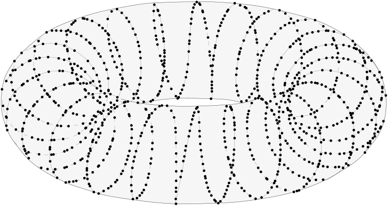
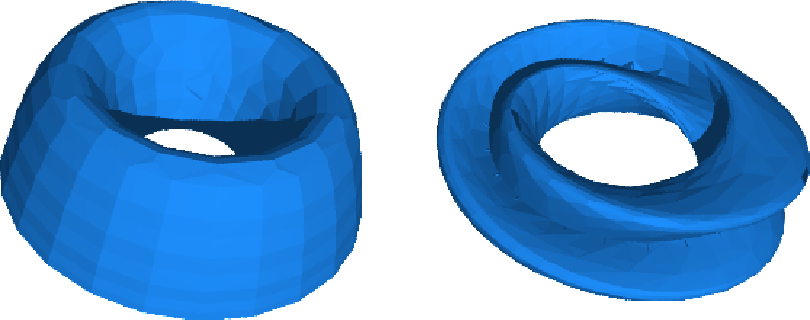
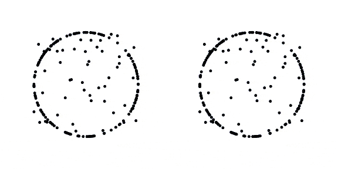
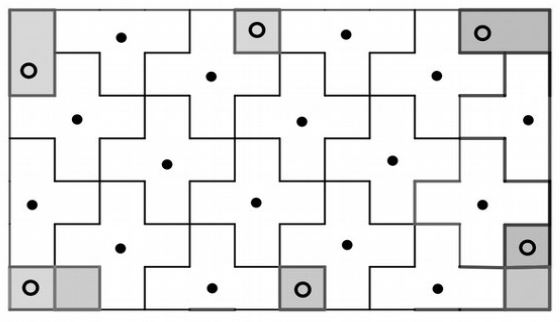
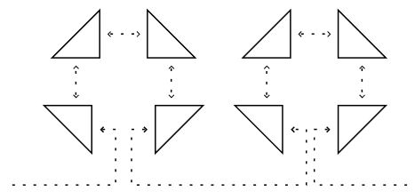
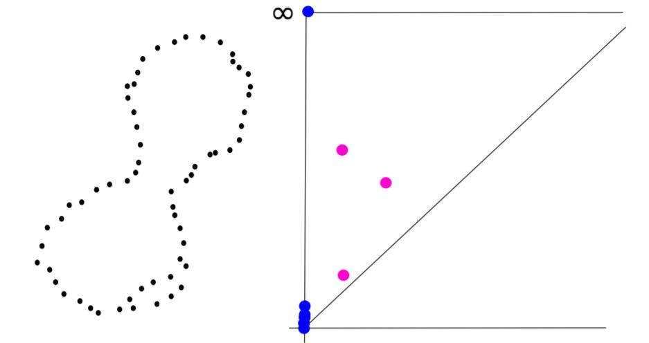

Postdoc at EMAp.
Former PhD Student at LMO Orsay (Topologie et Dynamique) and Inria (DataShape).
PhD Advisors: Frédéric Chazal and Marc Glisse. Postdoc contact: César Camacho.
- Email: raphael.tinarrage[at]fgv.br
- Adress: FGV EMAp, Praia de Botafogo, nº 190 - 5º Andar - Sala 514
- CV
- GitHub, YouTube
- Google Scholar, HAL, arXiv, ORCiD, theses.fr
Research
Research interests:- Persistent homology theory
- Varifolds
- Combinatorics of simplicial complexes
- Real life applications of Topological Data Analysis
|  |
Topological inference from measures and vector bundles. PhD Dissertation. |
|  |
Computing persistent Stiefel-Whitney classes
of line bundles. Characteristic classes in a persistent setting. Preprint. |

|
Recovering the homology of immersed manifolds. A method to estimate the tangent bundle of immersed manifolds. Preprint. |
|  |
DTM-based filtrations. Robust filtrations for persistent homology. Published in Abel Symposium 2018 and SoCG 2019. |
Code
My work is implemented in thevelour package for Python (PyPI and GitHub).
Talks
- Dec 2020, Applied Algebraic Topology Network, Persistent Stiefel-Whitney classes (video, slides)
- Dec 2020, UMPA Lyon, Modelling, Analysis and Scientific Computing, Inférence topologique avec l'homologie persistante (slides)
- Nov 2020, EPFL, Applied Topology Seminar, Persistent Stiefel-Whitney classes (video, slides)
- Oct 2020, UPSUD, PhD Defense, Topological inference from measures and vector bundles (video, slides)
- June 2020, Symposium of Computational Geometry, Recovering the homology of immersed manifolds (video, slides)
- May 2020, UPSUD, Séminaire informel, Introduction à l'homologie persistante (video, slides)
- Mar 2020, Inria Saclay, Datashape seminar, Introduction aux classes de Stiefel-Whitney (notes)
- Oct 2019, Inria Saclay, Datashape seminar, Recovering the homology of immersed manifolds (slides)
- June 2019, Symposium of Computational Geometry, DTM-based filtrations (slides)
- June 2018, IST Austria, Algebraic Topology: Methods, Computation and Science, DTM-based filtrations (poster)
Teaching
At EMAp:- Jan 2021, Summer course, Topological Data Analysis with Persistent Homology, L3
- 2017 - 2019, M257, TD Equations différentielles ordinaires, L2 Biologie-Chimie
- 2017 - 2020, M331, TP Inférence statistique, L3 MINT
- 2017 - 2020, M326, TD Projet modélisation et calcul scientifique, L3 MINT
Misc.
|  |
I conduct the MeJ workshop in Collège Alain Fournier (Orsay). |
|  |
A compilation of some of my work as a student in Magistère de Mathématiques d'Orsay (in French). |
|  |
See here for a gentle introduction to persistent homology (in French). |